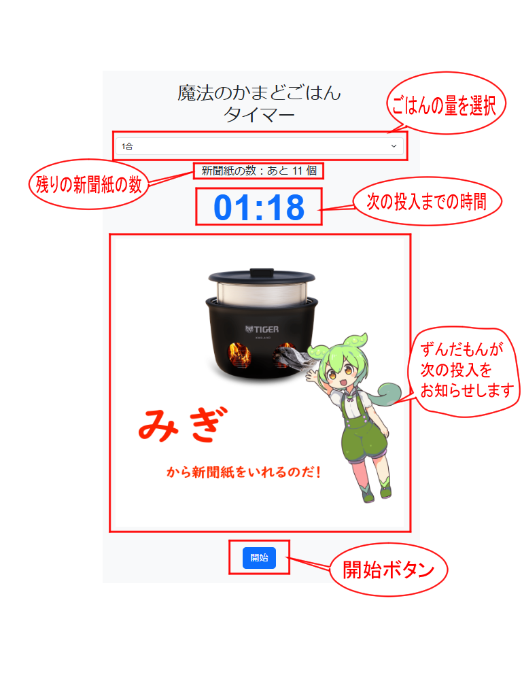

🍚 ごはんタイマー
ごはんタイマーの使い方
📝 ごはんタイマーとは？
ごはんタイマーは、
Tiger 魔法のかまどごはん
の新聞紙投入タイミングを正確にお知らせする専用タイマーです。指定したごはんの量に応じた最適な時間でカウントダウンを行い、通知と音でお知らせします。
🖥️ 画面の説明

🔧 使い方
お米を研いで、ふやかしてごはんを炊く準備をします。
ごはんタイマーを開いて、ごはんの量を選びましょう
「開始」ボタンを押すとタイマーが開始されます。
ずんだもんが新聞紙を入れるタイミングを教えてくれるので、指示通りに新聞紙を入れましょう
おいしいご飯の出来上がり！
💡 注意事項
音が出ますので、音量にご注意ください。
スマートフォンで使用する場合は、スリープ防止のために画面を開いたままにしてください。
動作確認済ブラウザ：Google Chrome / Safari / Edge
ごはんを炊くときはやけど等にくれぐれもご注意ください。
このタイマーを使ったことによる、けが,損害等の責任は負いかねます。
その他使用方法などはTiger 魔法のかまどごはんのウェブサイト及びマニュアルを参照してください。 マニュアル等をよく読み安全に気を付けて使用してください。
魔法のかまどごはん公式サイト